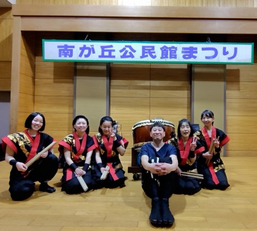
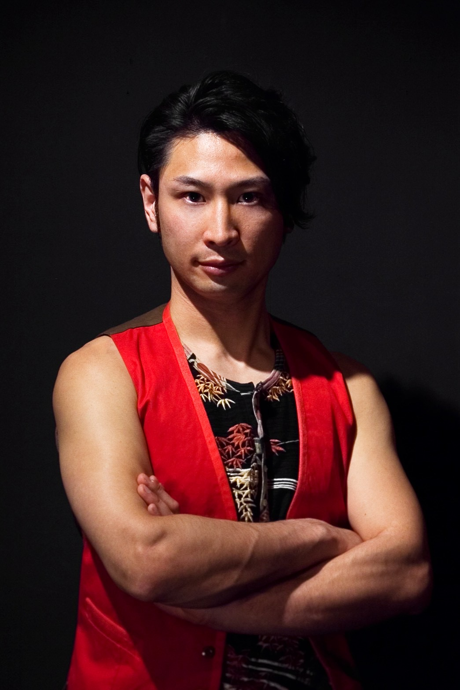

素舞瑠がどんな思いで活動しているか、ここでご紹介します。
| サークル名 | 素舞瑠（スマイル） |
|---|---|
| 設立 | 2015年（活動9年目） |
| 練習場所 | 秦野市南が丘公民会 多目的ホール |
| 練習日 | 毎月2回・金曜日 19:00〜21:00 |
| メンバー構成 | 10代〜60代 計5名 全員初心者 |
素舞瑠は、太鼓の技術を磨くだけでなく、地域とのつながりを大切にしながら活動しています。
伊勢原市、秦野市のお祭りや文化祭への出演を通じて地域の魅力を発信し、地域の方々と共に元気な街づくりを目指します。
年齢や性別、経験に関係なく、太鼓を通じて多世代が交流できる場をつくります。
伝統的な和太鼓の魅力を、次の世代へ楽しみながら伝えていきます。

現在、中学生から60代まで幅広い年齢層のメンバー5名が在籍しています。会社員、主婦、学生など職業もさまざまですが、太鼓を打つ時間は誰もが同じ「素舞瑠の一員」。初心者にはプロの講師が丁寧に指導するので、安心してご参加いただけます。

東京打撃団に所属し、20年以上にわたりプロ奏者として国内外で活躍。力強さの中に繊細さを持つ演奏スタイルが高く評価されています。素舞瑠では基礎から丁寧に指導し、身体の使い方と太鼓の楽しさを大切にしています。